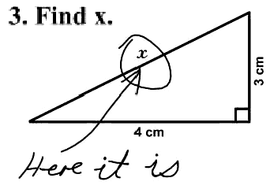

Ember Testing
Why it didn't work
(and what we did to fix it)
- REFACTOR TO JS!!!
- App.create() => App.extend()
- start-app.js.erb
App.create() => App.extend()
Instead of this:
// app/assets/javascripts/Vidz.js
window.Vidz = Ember.Application.create({
aVariable: "that shouldn't be directly on vidz",
aConstant: "that can't be overridden during testing"
});
App.create() => App.extend()
do this:
// app/assets/javascripts/Vidz.js
window.Vidz = Ember.Application.extend();
// app/assets/javascripts/start-app.js (pseudo code)
if (prod) {
configObject = prodConfigObject;
} else if (test) {
configObject = testConfigObject;
}
window.VidzApp = window.Vidz.create(configObject);
// SHOW da code!
App.create() => App.extend()
And we can create and destroy the app for each test:
// test/javascripts/acceptance/feature-test.js
module('Acceptance - feature acceptance test', {
setup: function() {
// startApp calls create on app with testConfigObject
App = startApp();
},
teardown: function() {
// destroy after every test
Ember.run(App, 'destroy');
}
});
App.create() => App.extend()
Better yet for unit tests:
// test/javascripts/unit/feature-test.js
module('Unit - feature acceptance test', {
setup: function() {
// don't start the app and ONLY test this unit
},
teardown: function() {
// nothing to destroy
}
});
Now just follow the guides
http://emberjs.com/guides/testing/
Instead of this:
// test/javascripts/acceptance/feature-test.js
test('it works when you do a bunch of async stuff', {
click('.a-button');
andThen(funciton() {
fillIn('.a-form', 'NAME');
andThen(function() {
doCustomAsyncHelper('.a-glider');
andThen(function() {
// make your assertion
ok(this.works, 'this works');
})
})
})
});
Do this:
// test/javascripts/acceptance/feature-test.js
test('it works when you do a bunch of async stuff', {
click('.a-button');
fillIn('.a-form', 'NAME');
doCustomAsyncHelper('.a-glider');
andThen(functon() {
// make your assertion
// `andThen` knows to wait!
ok(this.works, 'this works');
})
});
A really simple unit Test:
;(function () {
moduleFor('route:channel', 'ChannelRoute Test');
test('#model fetches single channel', function() {
var channel_key = 'sweet-channel';
var channel = { key_name: channel_key };
Vidz.DS.store('channel', channel_key, channel);
var model = this.subject().model({ channel_key: channel_key });
equal(model, channel, 'model is the channel from the store');
});
})();
A simple component unit Test:
(function() {
moduleForComponent('coffin-link', 'CoffinLinkComponent');
test('#_transitionRoute return array for complex trans', function() {
var component = this.subject({
transitionRoute: 'playlists.show/sweet-playlist'
});
equal(
component.get('_transitionRoute').toString(),
['playlists.show', 'sweet-playlist'].toString(),
'_transitionRoute returns an array split on / for complex routes'
);
ok(
(component.get('_transitionRoute') instanceof Array),
'complex transitionRoute returns array'
);
});
})();
A helpful pattern:
test('closeAndTransition sends the transition route', function() {
// use expect because if sendAction never called,
// the test passes anyway
expect(1);
var transitionRoute = 'playlists';
var component = this.subject({
transitionRoute: transitionRoute,
sendAction: function(arg1, transitionRouteArg) {
// stub sendAction to see if arguments get called properly
equal(
transitionRouteArg,
transitionRoute,
'_transitionRoute sent with action!'
);
}
});
component.send('closeAndTransition');
});
A simple controller test:
(function () {
moduleFor('controller:playlists-index', 'PlaylistsIndexController Test');
test('computed properties on content work', function() {
var controller = this.subject({model: [0,1,2,3,4,5]});
equal(
controller.get('featuredPlaylists').toString(),
'0,1,2',
'featuredPlaylists returns the top 3 playlists'
);
equal(
controller.get('otherPlaylists').toString(),
'3,4,5',
'otherPlaylists returns the rest of the playlists'
);
});
})();
Oops I lied a little.
We have a custom data layer, so `moduleFor('model')` doesn't work :(
Try this instead:
(function () {
module('Video Model Test');
test('#channel returns associated channel', function() {
var channel_key = 'sweet-channel';
var channel = { key_name: channel_key };
Vidz.DS.store('channel', channel_key, channel);
var video = Vidz.Video.create({
id: 1,
slug: 'sweet-video',
channel_key: channel_key
});
equal(
video.get('channel'),
channel,
'#channel returns associated channel'
);
});
})();
Where do we go from here
- REFACTOR TO JS!!!
- Write more tests
- Speed up test runner (guard?)
- Suggestions? Questions?
The End
Go write tests!